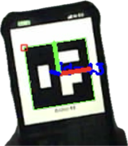

PYLD-04Solo build
A.S.T.R.A.
Autonomous System for Tracking, Rendezvous & Alignment
A vehicle that finds a target, lines itself up, and closes the gap on its own. A pan-and-tilt camera locks onto a fiducial marker, estimates its relative pose, and drives a closed-loop alignment until capture — the rendezvous problem real spacecraft solve, scaled to the bench. It's also where this site's metaphor comes from.
- Controller
- Seeed XIAO nRF52840 Sense
- Vision
- ESP32-CAM · ArUco markers
- Actuation
- Pan / tilt servos
- Link
- Bluetooth Low Energy
- Firmware
- C, tuned for low latency
- Closed-loop visual servoing: detect marker, estimate pose, correct, converge.
- Wireless BLE command and telemetry between distributed microcontroller nodes.
- Hand-tuned control loop built for deterministic, low-latency response.
- Owned end to end — mechanics, electronics, vision and firmware.